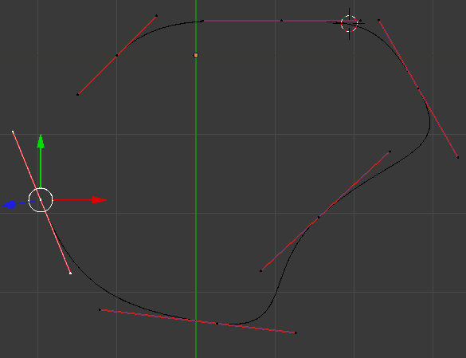
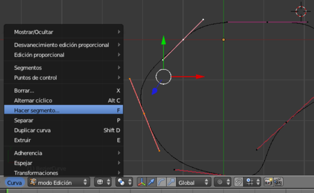
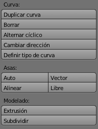
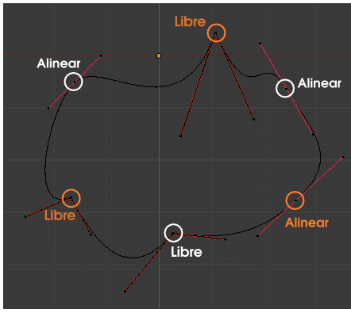
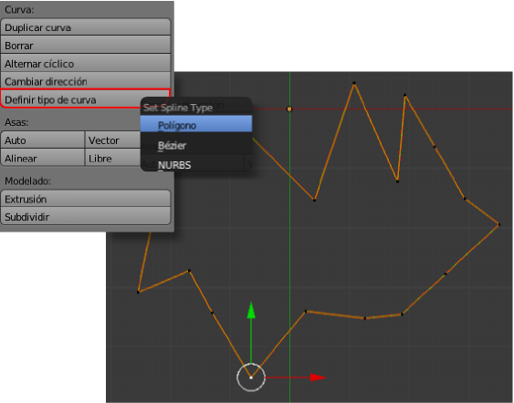
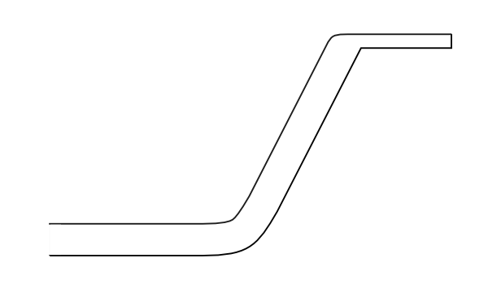
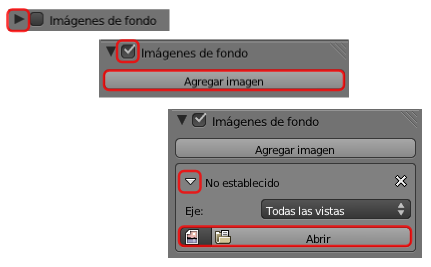
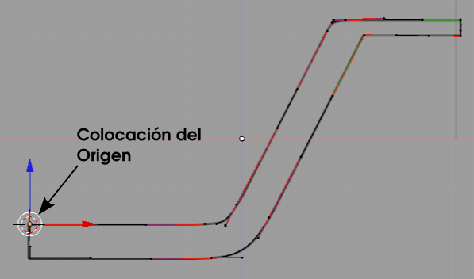
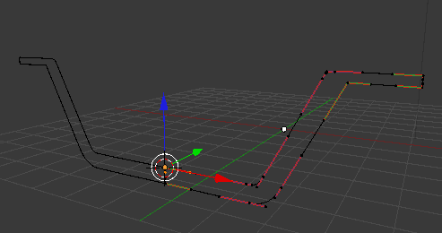
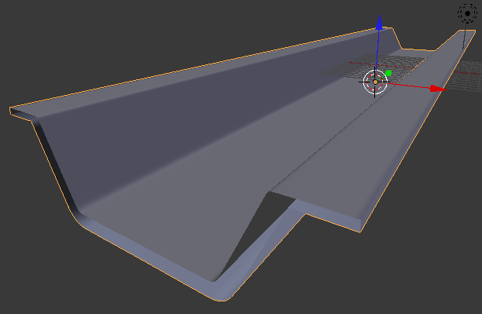

Curvas
Hay un tipo de objetos llamados curvas (Añadir/Curvas) que merecen una parada en nuestro estudio debido a la gran cantidad de posibilidades que nos brindan. En realidad su potencial está más relacionado con las animaciones pero es necesario conocer sus fundamentos para el modelado.
Cuando añadimos una bézier (Añadir/Curva/Bézier) lo que aparece en escena es un curva suave editable en Modo Edición  en sus extremos tanto por sus nodos como por sus asas.
en sus extremos tanto por sus nodos como por sus asas.
Su panel  nos brinda la posibilidad de que la curva sea 3D quede restringida a un plano 2D.
nos brinda la posibilidad de que la curva sea 3D quede restringida a un plano 2D.
La creación de nuevos nodos es igual que cuando añadimos vértices a una malla: tan sólo hay que tener seleccionado uno de los nodos finales y extruir ("E") .
Para cerrar la curva seleccionamos los dos nodos (inicial y final) y usamos "F" o Curva/Hacer segmento.
Tanto la edición anterior como otras las encontramos en el cuadro Herramientas ("T").
Destacamos:
- Asas. Hay cuatro tipos de nodos definidos por las características de sus asas, de los cuales nos interesan sólo:
- Alinear. Son los nodos por defecto. Originan una sensación de continuidad en la curva.
- Libre. Se origina un nodo de esquina. En ese punto la curva se puede quebrar al editar las asas.

- Subdividir. Si tenemos dos nodos seleccionados, esta opción añade uno nuevo en el centro sin alterar la forma de la curva.
- Definir tipo de curva. Sólo nos interesan:
- Bézier. La curva por defecto.
- Polígono. La curva se convierte en una poligonal quebrada a base de segmentos rectos sin asas (ya que no tendrían sentido).

Ejercitación
Vamos a proponerte un ejercicio para repasar algunos conceptos fundamentales.
- Traza con curva 2D del contorno de medio canal de aguas usando de fondo esta imagen.

A continuación se explica brevemente el método para usar una imagen de fondo.
Nos dirigimos al cuadro de Propiedades ("N") y buscamos una botonera llamada Imágenes de fondo; la desplegamos con el pequeño triángulo, activamos la opción y pulsamos Agregar imagen. Tras esto desplegamos el panel No establecido para poder usar el botón Abrir e ir a buscar nuestra imagen de referencia.
Siempre que estemos en una vista ortográfica se verá la imagen; también desde el punto de vista de la cámara "NumPad 0" aunque es seguro que se mostrará distorsionada porque las proporciones no son las mismas (si cambiamos Resolución X a 1200 y Resolución Y a 700 el problema se soluciona ya que estas son medidas proporcionales a las de la imagen, 600x350px).
- Coloca el Origen del objeto en el lugar que se indica en esta imagen. Te recordamos que debes usar tanto Objeto/Adherencia como la opción Origen en el cuadro de Herramientas ("T").

- Comprueba cómo este tipo de objeto también admite el modificador Espejo.

- Como si se tratara de un objeto Texto aplícale una extrusión.
